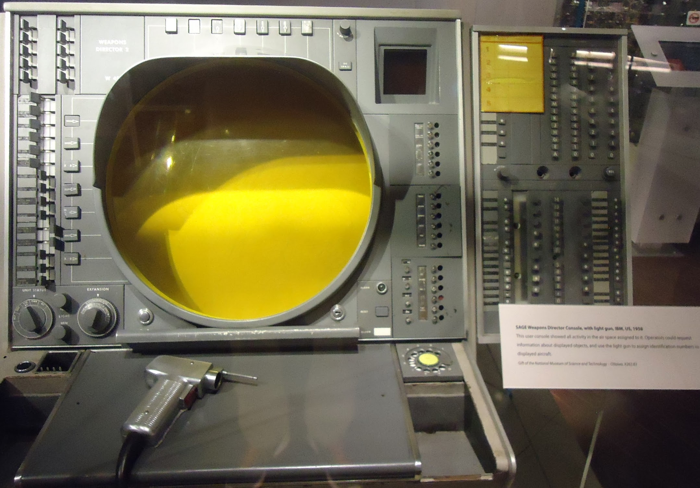
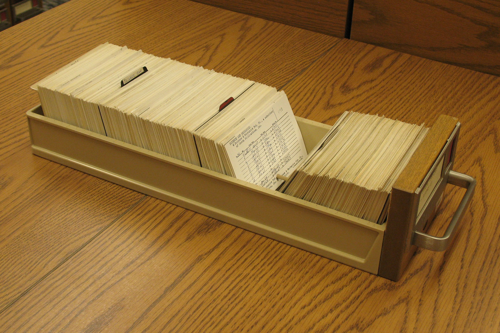
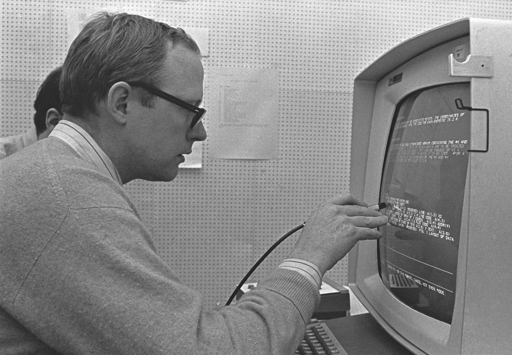
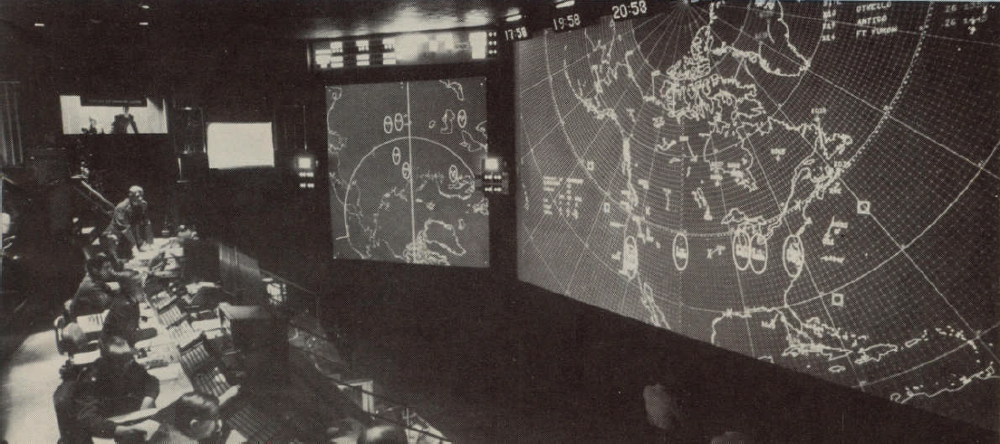

RESULT OF INSPECTIONANOTHER EXPERIMENT IS REQUIRED
WHAT IS THE QUESTION?
+
SECTION 2
TWO AIMS
01FORMULATE THE QUESTIONBring the machine into the part of a technical problem that is still taking shape.02THINK IN TIMEBring computation into decisions before the situation has moved on.
NOWTHE SITUATION MOVES
SUBJECTONE TECHNICAL PERSONOBSERVING HIS OWN WORK
SPRING AND SUMMER1957
WHAT ACTUALLY FILLS THE HOURS CALLED THINKING?
THE WORK BEFORE THE WORK
GETTING INTO POSITION TO THINK
SEARCH
OBTAIN
CALCULATE
NORMALIZE
PLOT
TRANSFORM
TEST CONSEQUENCES
ABOUT85%
OF MY THINKING TIME
WAS SPENT GETTING INTO POSITION TO THINK.
ILLUSTRATIVE RECONSTRUCTION
ONE QUESTION
HOW WELL CAN PEOPLE UNDERSTAND SPEECH?
EXPERIMENT ARATIOEXPERIMENT BDECIBELSEXPERIMENT CINVERTED RATIOEXPERIMENT DMASKER LEVELEXPERIMENT EARTICULATIONEXPERIMENT FPEAK AVERAGE
SAME UNDERLYING QUESTION.
SIX DIFFERENT WAYS OF MEASURING IT.
ILLUSTRATIVE RECONSTRUCTION
01 - CONVERT02 - NORMALIZE03 - CALCULATE04 - PLOT
RUNRAW MEASURECOMMON dBCHECK
ARMS 0.25-12.04OK
BLOG -0.60-12.00OK
CN/S 3.98-12.00OK
DM-S 12.0-12.00OK
EAI 0.18-11.86OK
FPK-AVG -11.7-11.70OK
ELAPSED CLERICAL OPERATIONS0000
SEVERAL HOURS LATER
ILLUSTRATIVE RECONSTRUCTION
PRESENTATION INTERPRETATION · THE PROPOSED DIVISION OF WORK
THE MACHINE WOULD NOT HAVE THE INSIGHT.
IT COULD HELP US REACH A VIEW WHERE HUMAN INSIGHT COULD HAPPEN.
GENERAL ELECTRONIC RESEARCH PRODUCTSADVANCED DOMESTIC AND SCIENTIFIC APPARATUS DIVISION - 1962
INTRODUCING
SYMBIOTE™
ELECTRONIC RESEARCH COMPANION

MODEL S-60HUMAN OPERATOR REQUIRED
CALCULATESSIMULATESPLOTSRETURNS VARIANTS
TESTED FOR USE WITH UNFORMULATED PROBLEMS
CATALOG FILM S-14 - PRODUCT CONCEPT RECONSTRUCTION
OPERATING PRINCIPLE 16-A
ONE WORKING EXCHANGE
THE WORK MOVES BOTH WAYS
HUMAN
SETS DIRECTION
GOAL
HYPOTHESIS
CRITERION
HYPOTHESIS CARD 08TEST THIS RELATION.→
→←
COMPUTER
PERFORMS OPERATIONS
RETRIEVE
NORMALIZE
TRANSFORM
SIMULATE
PLOT
COMPARE
←RETURN CARDS 08-A/CEVIDENCE · ANOMALY · ALTERNATIVE
HUMAN EVALUATESBETTER NEXT QUESTION
SYMBIOTE™ REQUEST 004EXPLORATORY GRAPHING SERVICE - PRIORITY NORMAL
PREREQUISITE 01 · TIME SHARINGLATER ILLUSTRATION · 1970
USER AUSER BONE FAST MACHINEUSER CUSER D
NOT NEXT WEEK. NOT TOMORROW.AT THE MOMENT OF THOUGHT.ONE FAST MACHINE DIVIDES ITS TIME AMONG MANY PEOPLE.
THE THINKING CENTER JOINS LIBRARY · RETRIEVAL · COMPUTATION.
PREREQUISITES 02 + 03 · MEMORY + ORGANIZATION
PUBLISHED MEMORY

CONTEMPORARY CARD-DRAWER IMAGE · 2009 · ANALOGY FOR AN EXTERNAL RECORDENTER BY NAMEMATRIX MULTIPLICATION
STANDARD INITIAL REGISTER
MIGHT RETRIEVETHE ENTIRE PROGRAM
AVAILABLE FOR USE AND INSPECTION
DESIGNATE THINGS BY NAMING OR POINTING.J. C. R. LICKLIDER · §5.3
PREREQUISITE 04 · LANGUAGE
INSTRUCTION TO A HUMANGOAL CRITERIONMAKE THE IMPORTANT THING EXPLICIT.
VERSUS
INSTRUCTION TO A CONVENTIONAL COMPUTERROUTE ROUTE ROUTEEVERY ALTERNATIVE FORESEEN IN ADVANCE.
AN UNFORESEEN ALTERNATIVE STOPS THE PROCESS.
PREREQUISITE 05 · INPUT / OUTPUT

LATER ILLUSTRATION · IBM 2250 DISPLAY CONSOLE · 1969
ROUGH HUMAN MARK
MACHINE-READABLE STRUCTURE
PRECISE · EDITABLE · SHAREDTHE SAME WORK SURFACE

LATER ILLUSTRATION · NORAD CONTROL ROOM · 1964COMMON SITUATION · DIFFERENT RESPONSIBILITIES
INPUT AND OUTPUT · COULD SPEECH BECOME A NATURAL MEANS?
SPEAK. SEE IT. HEAR IT BACK.
CONTEMPORARY BROWSER DEMONSTRATION · NOT A 1960 SYSTEM
LIVE TRANSCRIPTYour words can appear here.
Browser or vendor speech services may process audio. This page does not store it. Permission is requested only when RECORD is pressed.
LICKLIDER · SECTION 5
PREREQUISITES FOR REALIZATION.
TIME SHARINGMEMORYORGANIZATIONLANGUAGEINPUT / OUTPUT
PREREQUISITES
WHAT KIND OF RELATION DO THEY MAKE POSSIBLE?
LICKLIDER · SECTION 1.2
BETWEEN “MECHANICALLY EXTENDED MAN” AND “ARTIFICIAL INTELLIGENCE”
01
HUMAN→TOOL
MECHANICAL EXTENSION
THE MACHINE AMPLIFIES A HUMAN ACT.
02
MACHINE→HUMAN
HUMANLY EXTENDED MACHINE
THE PERSON HANDLES WHAT AUTOMATION COULD NOT.
03
HUMAN⇄COMPUTER
SYMBIOTIC PARTNERSHIP
DIFFERENT CAPABILITIES IN CONTINUOUS EXCHANGE.
HUMAN FACTORS DIVISIONAUDIENCE EXPERIMENT 03NO CONSENSUS WILL BE TABULATED
CONTEMPORARY DISCUSSION VOCABULARY · NOT LICKLIDER'S THREE LABELS
WHICH RELATIONSHIP DO YOU ACTUALLY WANT WITH A COMPUTER?
SECOND QUESTIONWHAT WOULD HAVE TO BE TRUE FOR YOU TO CALL IT A PARTNER?
HANDS · MOVE TO A SIDE · SPEAK · OR SELECT A CARD
No relationship selected.
WORKING RECORD 28-A
THIS PRESENTATION
ONE ACTUAL ITERATIVE EXCHANGE
01 · HUMAN AUTHORSHIP
STORYBOARD BEFORE BUILD
ARGUMENTWHAT MUST EACH SCENE EARN?STORYBOARDWHAT HAPPENS—AND WHEN?PRESENTATION DIRECTIONWHAT SHOULD THE ROOM UNDERSTAND AND FEEL?ART DIRECTIONWHAT VISUAL WORLD HOLDS IT TOGETHER?
02 · COMPUTER-ASSISTED ITERATION
VARIATIONS BECOME VISIBLE
ABUILDBCOMPARECTEST
PARALLEL CRITIQUE PASSES
AUDIENCE READ
HISTORICAL CHECK
VISUAL COHERENCE
FUNCTIONAL TEST
POSSIBLE PERSPECTIVES · SUGGESTED EDITS · NOT DECISIONS
03 · JUDGMENT RETURNS TO THE STORYBOARDCOMPARE · CHOOSE · REJECT · REDIRECT · RE-STORYBOARD
THE NEXT VERSION CHANGES THE NEXT QUESTION.
“IT SEEMS LIKELY THAT THE CONTRIBUTIONS OF HUMAN OPERATORS AND EQUIPMENT WILL BLEND TOGETHER SO COMPLETELY IN MANY OPERATIONS THAT IT WILL BE DIFFICULT TO SEPARATE THEM NEATLY IN ANALYSIS.”J. C. R. LICKLIDER · §4
1960 · AN ESTIMATE WITH A VERY WIDE ERROR BAR
THE INTERIM
BEFOREMECHANICAL EXTENSION
10 YEARS?500?HUMANS + COMPUTERS WORKING TOGETHER
DISTANT POSSIBILITYMACHINES ALONE?
“THOSE YEARS SHOULD BE INTELLECTUALLY THE MOST CREATIVE AND EXCITING IN THE HISTORY OF MANKIND.”J. C. R. LICKLIDER · §1.2
FRAME 01 · OPENINGTHE FIG TREEFRAME 02 · WITHIN THE FIGTHE INTERNAL FLOWERSFRAME 03 · MUTUALISTINSIDE ITS HABITAT
A PRODUCTIVE ANDTHRIVING PARTNERSHIP
J. C. R. LICKLIDER · §1.1